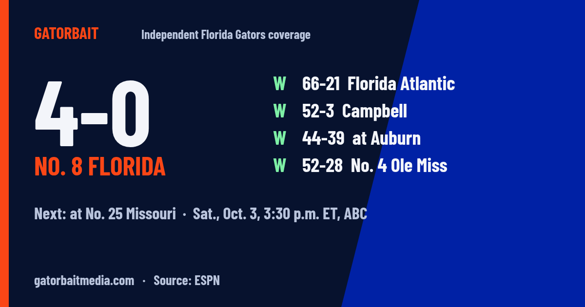
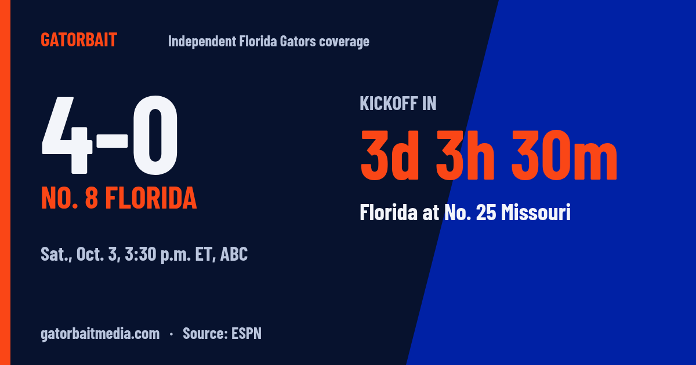
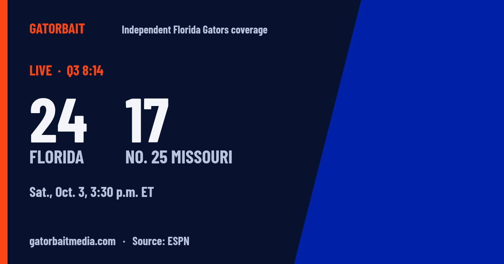
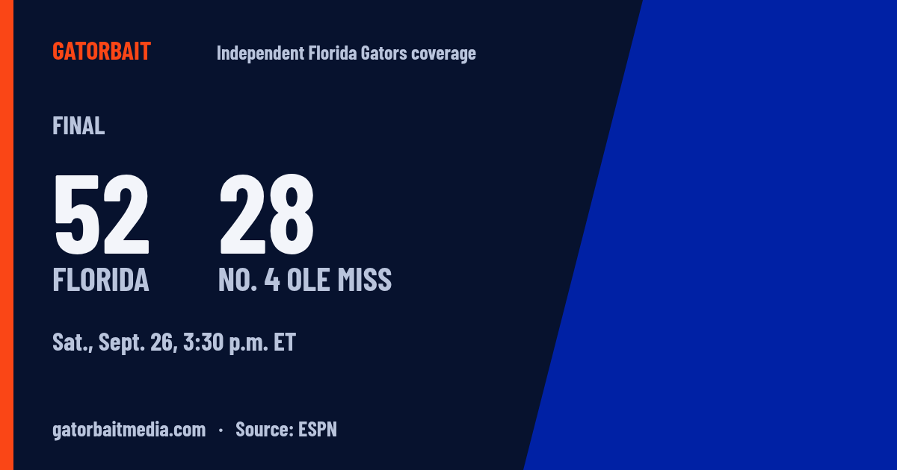
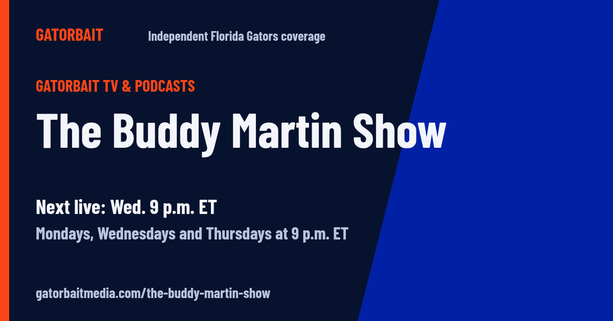
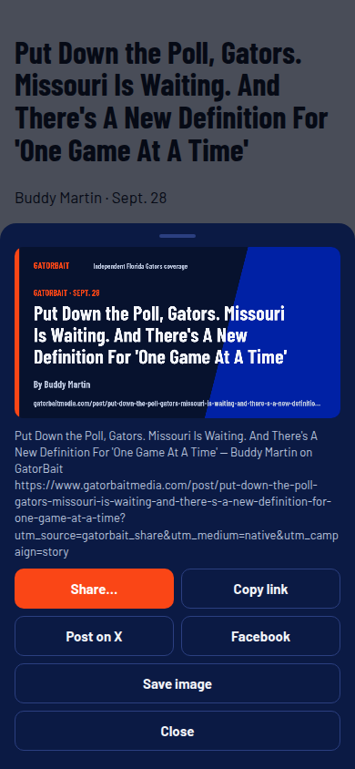
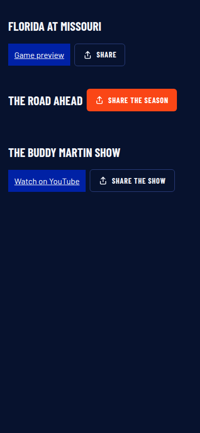
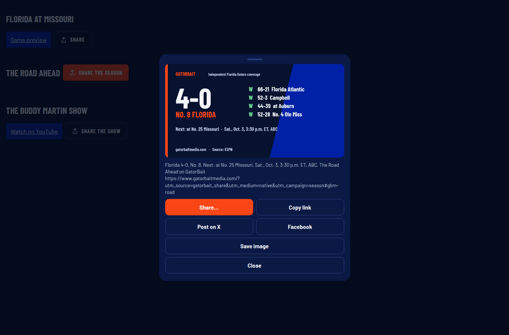

Real output from share.js, run in Chromium at 390 and 1365. The PNGs below came straight out of the module's canvas, not from an image editor. The buttons on this page run the same module, seeded with the same feed data, so tap one to open the live sheet.
The Tunnel · Game day
Florida at No. 25 Missouri
Sat., Oct. 3, 3:30 p.m. ET, ABC (ESPN via scoreboard.json)
cards/story.png, drawn from the blog page's canonical URL, headline and byline, matched to posts.json.

cards/season.png, from scoreboard.json (ESPN): W 66-21 Florida Atlantic, W 52-3 Campbell, W 44-39 at Auburn, W 52-28 No. 4 Ole Miss.

cards/tunnel-countdown.png, countdown at the fixture clock (Sept. 30, noon ET).

cards/tunnel-live.png, QA fixture score 24-17, Q3 8:14, from scoreboard.live. Fixture, not a real score.

cards/tunnel-final.png, from scoreboard.last (ESPN).

cards/show.png.
The sheet in the browser

shots/sheet-story-390.png: story page at 390 px. Share... called navigator.share with the PNG attached (qa-log.txt).

shots/home-390.png: Tunnel, Road Ahead and show buttons, 44 px each.

shots/sheet-season-1365.png: no Web Share API, so the in-page sheet; X, Facebook, Copy and Save all verified.
Sizes: share.js 22,242 chars; share.min.js 15,276 chars (6,227 gzipped), served from jsDelivr like homepage.js; the pasted Wix embed is the 294-character loader-snippet.html. Sources: ESPN via sports-live/scoreboard.json; gazette-live/posts.json. No live-site changes.